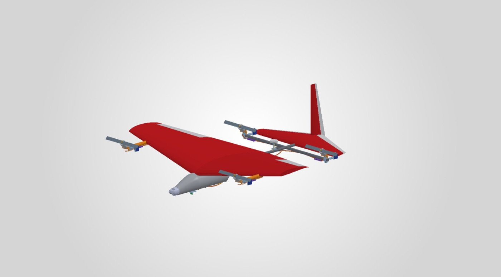
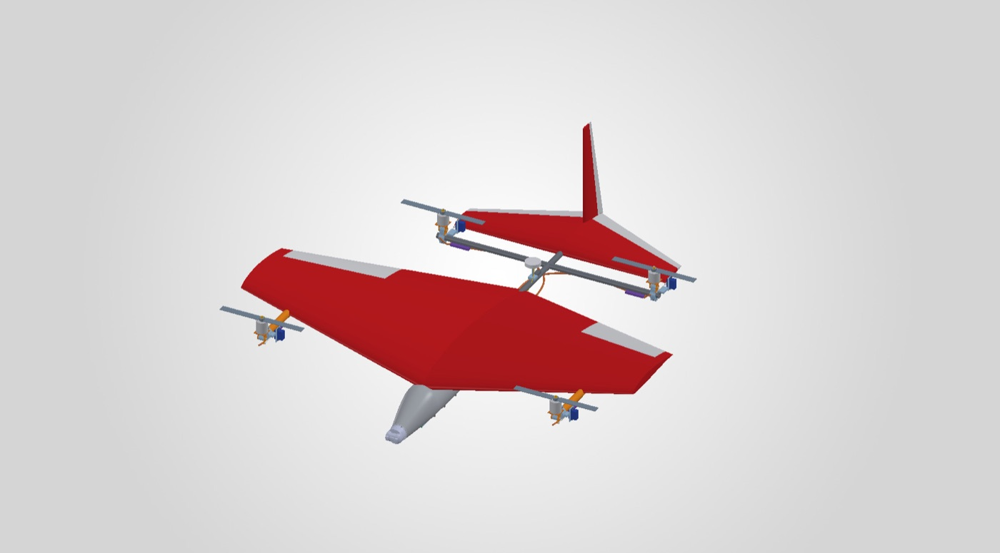
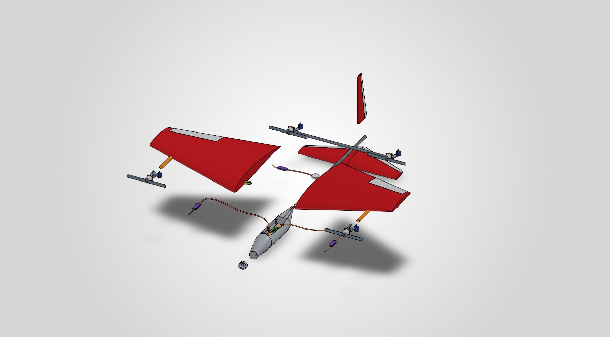
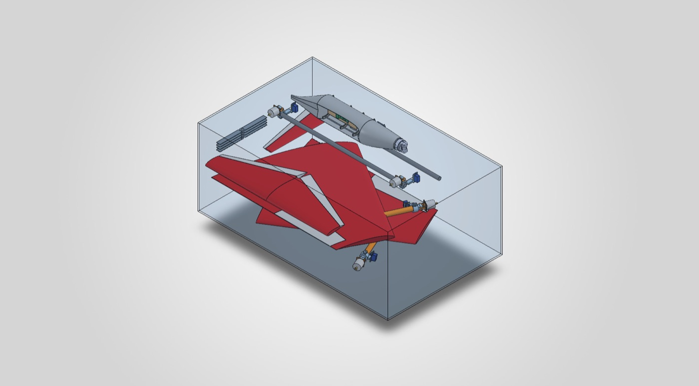
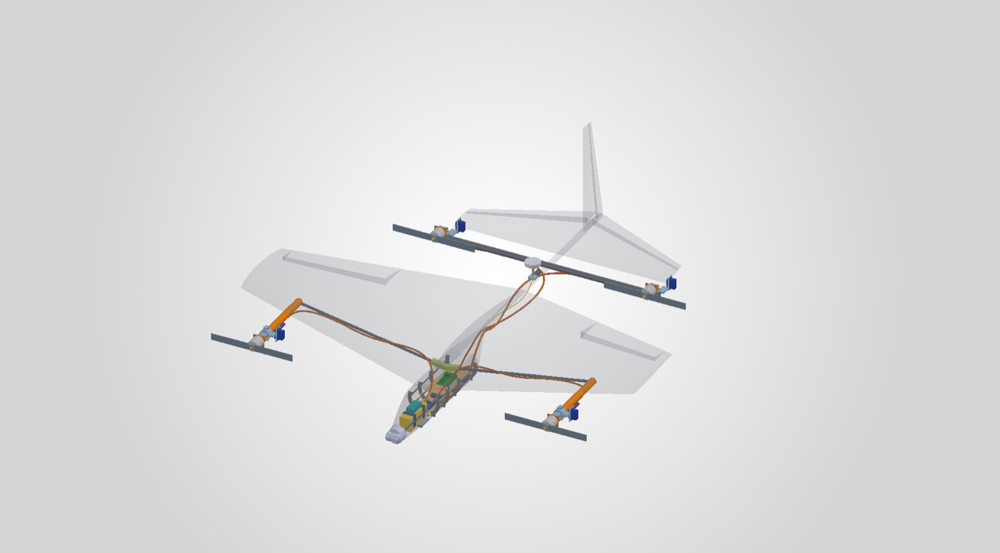

Two motor sizes to match a front-heavy hover load
The CG sits closer to the front rotors, so the front pair carries most of the weight in hover. The front and rear pairs use different motors to match those loads, with one propeller type throughout.
| Front rotors | 2 × SunnySky X4125 V3 KV480 |
|---|---|
| Rear rotors | 2 × T-Motor AT4120 KV500 |
| Propellers | APC 15×8E (standard and pusher) at all four stations |
| ESCs | 4 × 100 A, mounted in the prop wash |
| Battery | 6S 22.2 V 7200 mAh, 160 Wh |
MATLAB model: a 16–17 minute mission against a 15-minute requirement
I built the propulsion and mission model from momentum theory and APC propeller performance data, with motor electrical models for current and voltage. A full mission (climb, two transitions, 5-minute inspection hover, cruise, 20% reserve) comes out to about 16–17 minutes at the 15-lb sizing weight, meeting the 15-minute requirement. The battery trade study showed heavier packs push the aircraft past its sizing weight, so the 6S 7.2 Ah pack stayed.
Hover loads, power, and transition results
- The CG location puts 69% of the hover load on the front pair: 5.2 lbf per front rotor and 2.3 lbf per rear, or 7.8 and 3.5 lbf with a 1.5 sizing factor. The front and rear pairs use different motors to match.
- 927 W in hover and 230 W in cruise at 50 ft/s. A static screen of vendor thrust data gives a thrust-to-weight ratio of about 2.4.
- Forward transition takes about 13 s, with peak tilt rates near 62°/s front and 29°/s rear. Those rates set the tilt-servo requirement.

One propeller type at all four rotors
The first layout used a 15×10 in front and a 16×12E in back. I compared six APC propellers at the same hover thrust using APC's performance tables, checking static figure of merit, hover power, the RPM needed at a 1.5 thrust-to-weight margin against APC's published RPM limits, and efficiency near cruise speed. The low-pitch multirotor props hovered best but would exceed their RPM limit at full thrust, so they were ruled out. The design moved to one prop type, the APC 15×8E, at all four stations: higher hover figure of merit than either original prop (0.72 vs 0.71 and 0.66), cruise efficiency on par, and one set of spares. Because APC's tables are computed rather than measured, a thrust-stand test is planned to confirm the choice.
Full-aircraft CFD in Ansys Fluent, and the wing error it caught
To give the stability and control work real aerodynamic data, I set up an external-flow simulation of the whole aircraft from the SolidWorks model. Fluent's fault-tolerant meshing wraps the outer skin directly, so the detailed internal CAD needed no hand cleanup. Each mesh is about 790,000 cells with prism layers on every wall.
The first study is an elevator sweep for trim: five steady cases from −6° to −11° elevator, each reporting lift, drag, and pitching moment for the whole aircraft and for each part. I scripted it end to end in Fluent journals: one rebuilds the geometry, rotates each elevator half about its own hinge line, and writes a mesh per angle; the next runs every case from one saved setup, so the cases differ only in elevator angle.
Solver settings and cases
| Solver | Pressure-based, steady, k-ω SST |
|---|---|
| Cases run | Elevator −6.0°, −6.8°, −7.6°, −8.9°, −11.0°, rotors at 0° (cruise) |
| Reference values | 0.853 m² wing area, 0.495 m mean aerodynamic chord |
| Next | 10 cases on 8 meshes covering rotor tilt from 0° to 90°, with rotating rotor zones |
Checking the model before trusting it caught a real error: the CFD geometry still had the preliminary-design wing, with 26% more area than the final E214 wing (1,670 vs 1,323 in²). I rebuilt both halves to the final planform and verified chord and leading edge within 0.02 in from root to tip, and each elevator angle within about 0.15° of its target.
Tilt pods that keep thrust off the servo
Each motor sits on a pivoting fork driven by a servo, pushrod, and lever that rotate it from 0° (forward thrust) to 90° (vertical). The pivot is a 6 × 35 mm shoulder screw on two MR106 bearings, with the thrust line passing through the pivot so the servo carries only the motor's gyroscopic and drag moments, not thrust. The motor plates are 2.3 mm 6061-T6 aluminum; the forks and brackets are printed PETG. Every pod part is fully defined and driven by global variables, so geometry changes update the whole assembly.
Tilt mechanism sweeping 0 → 90 → 0°, animated from the SolidWorks assembly.


Six drawings and a build plan for student shop tools
I produced six engineering drawings: a dimensioned general arrangement with exploded view and BOM, the front and rear pod assemblies, and part drawings for the motor plates, fork arm, and tilt bracket with GD&T per ASME Y14.5. The manufacturing report routes every part to buy, print, machine, or lay up, with McMaster part numbers, costs, print orientations, and an assembly sequence, all achievable with student shop tools.



Every cable modeled, so harnesses can be cut from the CAD
Nothing mounts to the carbon fuselage wall. Everything sits on a bonded internal frame of four CF/Rohacell bulkheads tied together by carbon stringers, with a plywood avionics floor, shelf, and battery tray. I modeled every cable as its own part, routed where it will actually run, so harness lengths can be cut straight from the CAD. That showed the rear ESC power runs are the longest in the aircraft at about 1.5 m, so the build plan adds a low-ESR capacitor at each rear ESC to absorb the voltage spikes long battery leads cause.

Open issues and next steps
I exported mass, CG, and inertias from the CAD for cruise, transition, and hover so the stability and simulation work uses the real build. That check showed the cruise CG about 1.6 in aft of the neutral point, so I flagged it as a required fix before first flight, along with measuring the motor bolt patterns before the plates are machined. Static thrust and ESC testing starts in January 2027, followed by staged hover and full-mission tests.